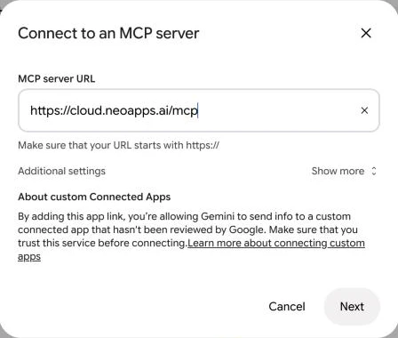
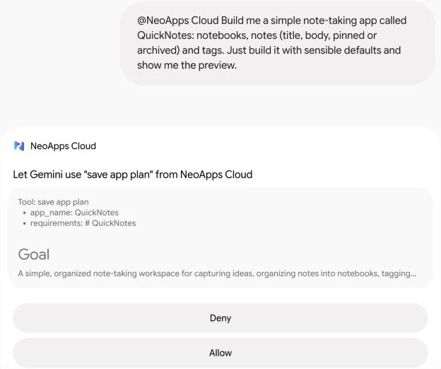
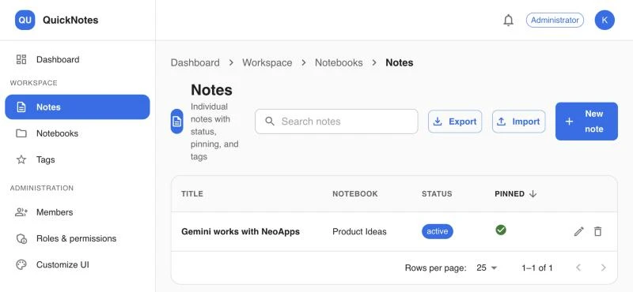

01
Invite people
Members → Invite link: type their emails and pick a role. Each person gets a link, joins with no password, and later signs in with a code sent to their email.
Connect the assistant you already use, check the app plan, and decide when to publish.
You'll need a NeoApps account. Connecting opens NeoApps Cloud so you can sign up or sign in. See free plan and plan details.
Add NeoApps from the assistant’s settings. If you use a work account, you may need an administrator to enable connectors or custom apps.
Then sign in to NeoApps when asked. Your assistant's screen looks similar.
https://cloud.neoapps.ai/mcphttps://cloud.neoapps.ai/mcpcodex mcp add neoapps --url https://cloud.neoapps.ai/mcphttps://cloud.neoapps.ai/mcp and leave Client ID empty.@NeoApps Cloud and describe your app.Can’t find the setup option? Check the connection and sign-in guide.
Already connected? Check your connection →
This example shows how the QuickNotes app went from setup to a live link.




Open a chat with NeoApps enabled and ask your assistant to show your NeoApps apps. An empty list is expected for a new account.
Start with a task your team repeats. If you’re still choosing an idea, try one of the examples.
Use the NeoApps connector. I want to build [describe your business app]. Ask me about users, data, approvals and permissions, then show me the preview and wait for my review. After I approve, publish it, check it's live and give me the link. Never ask me for passwords, card numbers or API keys in this chat.
Copy this prompt into your connected assistant to preview a portal with client and staff roles.
Use the NeoApps connector. I want to build a client portal where clients upload documents and see their own records. Staff review submissions, record approval decisions and notify the client when the status changes. Ask me about users, data, approvals and permissions, then show me the preview and wait for my review. After I approve, publish it, check it's live and give me the link. Never ask me for passwords, card numbers or API keys in this chat.
Check the proposed screens, records, and access rules. Ask for changes if you need them. When the plan is ready, approve it and ask your assistant to publish and share the link.
Open the link and follow the sign-in instructions. Try the workflow with sample records before you invite your team.
Members → Invite link: type their emails and pick a role. Each person gets a link, joins with no password, and later signs in with a code sent to their email.
Ask your assistant for the AI settings link. Paste your own key there, never in a chat.
On any list, Share form gives you a link people outside the app can fill in, with file uploads like a resume. Close it or replace the link any time.
Tell your assistant what to change. Review, publish. Your data stays.
Go to cloud.neoapps.ai/recover.